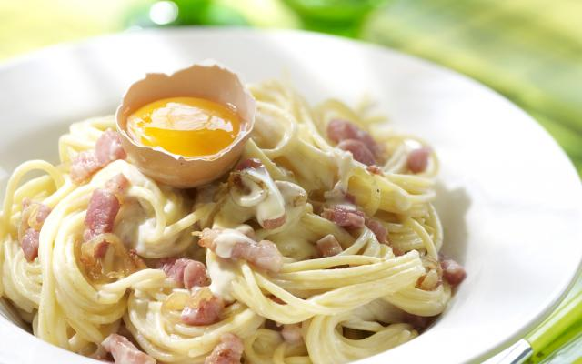

Pasta carbonara

Ingredienten
- boter
- 5 eiren
- 200g parmezaanse kaas
- 250g gerookt spek
- 500g pasta
- snuifje zout en peper
- scheutje olijfolie
Bereiding
- Zet een ruime kookpot met water op het vuur en breng het water aan de kook. Strooi een flink snuif zout in het water.
- Zet een braadpan op het vuur en verhit hierin een klontje boter en een scheutje olijfolie.
- Snij het gerookte spek in blokjes en bak het in de hete pan
- Neem een mengschaal en breek er de eiren in. Klop ze los met een garde enrasp de Parmezaanse kaas erbij. Roer de kaas door het eier mengsel.
- Zodra het water kookt, gaar je de pasta in.
- Giet het kookvocht af en doe de pasta in een ruime mengschaal
- Schenk het mengsel van de eiern en Parmezaanse kaas over de warme pasta en roer alles voorzichtig om.
- Voeg de krokante spekblokjes toe
- Roer een laatste keer alles om
- Klaar om te serveren